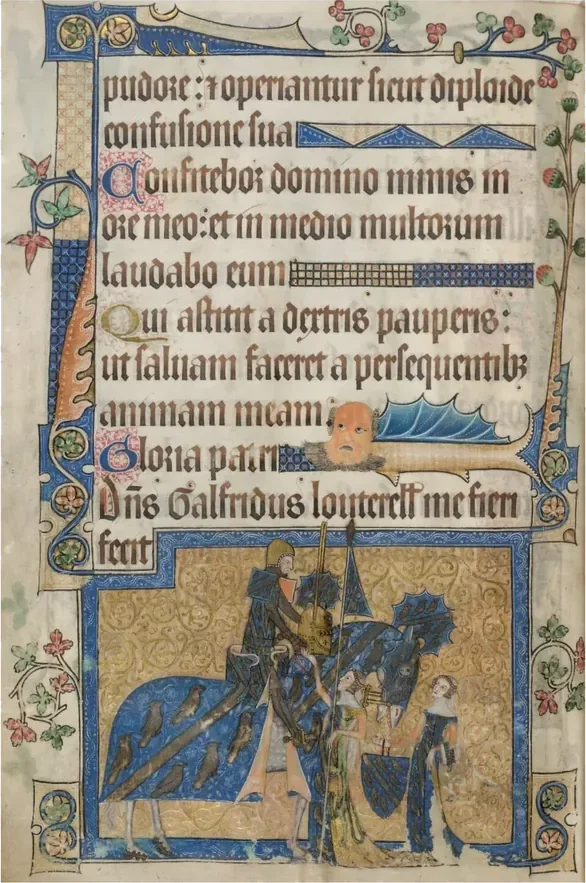
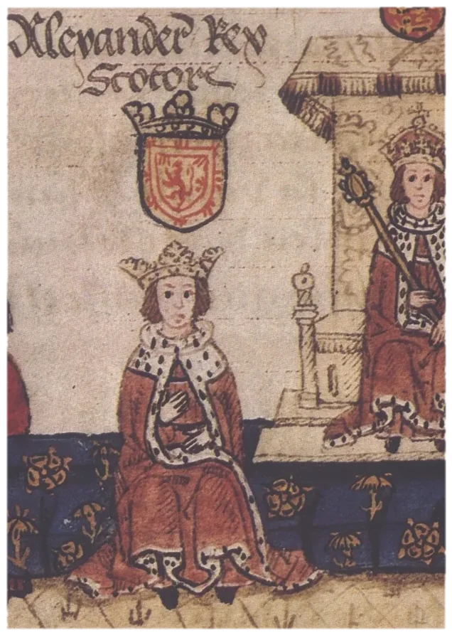
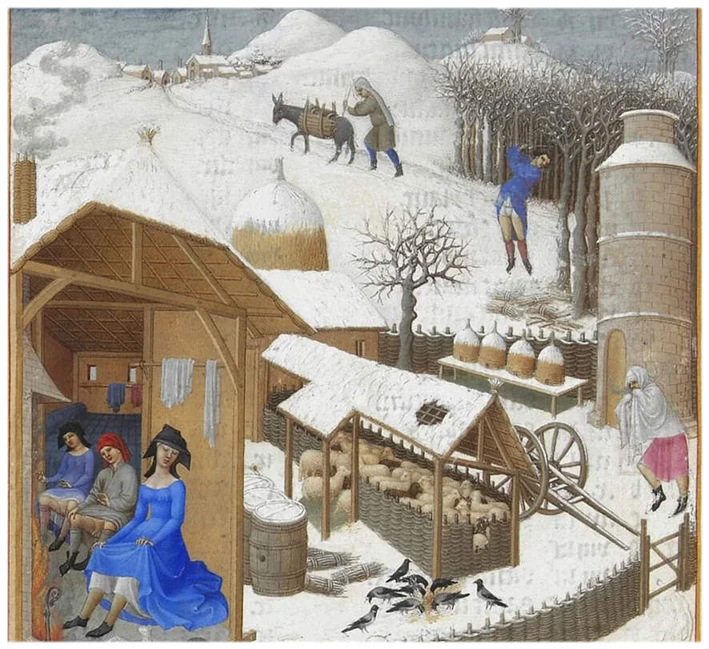

In 1347, a ship docked in Sicily carrying sailors who were already dying, and within five years a third of Europe was dead. The survivors — the peasants, the laborers, the serfs who had spent their entire lives dressed in rough undyed wool by law and by poverty — could suddenly afford silk, and nobody had planned it that way. The Black Death was the most radical economic redistribution in European history, and it showed up in what people wore almost immediately.
What Medieval Europe Looked Like Before the Plague
To understand what the Black Death changed, you first need to understand how rigidly controlled Medieval European fashion was before it arrived.
Medieval Europe ran on feudalism, a system extremely economically stratified. At the top sat the nobility and clergy, who controlled the land, the labor, and the law, and at the bottom sat everyone else — serfs, peasants, and laborers who owned nothing, earned almost nothing, and dressed accordingly.
Clothing in Medieval Europe was not a choice but a declaration of rank enforced by law. Sumptuary laws spread across Medieval Europe dictating in extraordinary detail what each social class was permitted to wear. In England, France, and the Italian city states, these laws specified not just which fabrics were permitted for which classes but which colors, which furs, which embellishments, and even how long your shoes could be. The longer the pointed toe of your shoe — called a poulaine — the higher your social rank, with peasants in flat practical footwear and nobles wearing shoes with points so extreme they sometimes had to be tied to the knee to walk.
Wool was the fabric of the poor — undyed, rough, and practical — with linen reserved for undergarments and silk, velvet, and fur legally restricted to the nobility. A merchant who had done well enough to afford a silk border on his tunic was breaking the law, and a peasant who inherited a fine wool cloak from a lord was legally required to sell it. The feudal wardrobe was a cage, and it would take the worst catastrophe in European history to break it open.
The Black Death Deep Dive
Between 1347 and 1351, the Black Death killed between 30 and 60 percent of Europe’s population, with some regions seeing mortality rates closer to 80 percent. Entire villages were wiped out, monasteries that housed Europe’s most educated people were devastated, and the clergy, who had told the poor that their suffering was God’s will, died in the same numbers as everyone else, which did more damage to the Church’s authority than a century of theology could have undone.
But the economic consequences were what changed everything about how Europe dressed. When half the labor force dies overnight, the survivors become valuable in ways they had never been before. Suddenly there weren’t enough peasants to farm the land, and lords who had spent centuries treating their serfs as property found themselves competing for workers. Wages rose dramatically, in some regions doubling or tripling within a decade, and for the first time in centuries ordinary laborers had money left over after feeding themselves.

The first thing many of them did with that money was buy better clothes, and this was not just a personal choice but a social earthquake. Peasants showing up to market in wool that had been dyed, in garments that had been cut with some care, in shoes that bore even a modest point — this was a direct challenge to the entire social order that clothing had been designed to maintain. The nobility panicked, and across Europe sumptuary laws were rewritten, tightened, and expanded in direct response to the plague’s economic aftermath.
In England, the Sumptuary Law of 1363 was explicitly triggered by the sight of lower class people dressing above their station, specifying in exhaustive detail that grooms, servants, and agricultural workers were forbidden from wearing anything but blanket cloth and prohibited from wearing any fabric that cost more than a specific price per yard. The law was passed because people were already breaking it, and they were breaking it because for the first time in generations they could afford to.

What the Survivors Wore
The decade after the Black Death saw a flowering of working class dress that had never existed before in Medieval Europe and would not exist again for centuries. Surviving wills and estate records from the 1350s and 1360s show ordinary laborers leaving behind wardrobes that would have been unthinkable a generation earlier — multiple garments, dyed fabrics, decorated belts, and leather shoes that, while not luxurious by any modern standard, were extraordinary by the standards of Medieval peasant life.
The merchant class, already wealthier than the peasantry but still legally restricted from the finest fabrics, pushed even harder against the boundaries. Italian merchants in Florence and Venice began commissioning garments in fine wool and silk blends that technically skirted the sumptuary laws without breaking them, and the legal line between merchant and nobility in dress became increasingly contested and blurred. The nobility responded by escalating, because if the lower classes could now afford wool, the nobility needed something they couldn’t.
Velvet — extraordinarily expensive, labor intensive, and technically complex to produce — became the fabric of choice for the upper classes in the decades after the plague, while fur linings, gold embroidery, and jeweled accessories proliferated among those who could still afford to separate themselves visually from the newly prosperous working class. This arms race of fabric and status, with the poor reaching up and the wealthy pushing further away, was the direct economic engine of late Medieval fashion. The plague didn’t just kill people — it destabilized the entire visual language of social hierarchy that European civilization had spent centuries constructing.
When the Order Reasserted Itself
The window of working class prosperity didn’t last forever. By the late 14th century, landlords had found new ways to suppress wages and reassert control over labor, with the Statute of Laborers in England attempting to legally cap wages at pre-plague levels as a direct economic response to the same disruption that had produced the Sumptuary Law of 1363. The Church rebuilt its authority, and the feudal system, while permanently weakened, reasserted enough control to push the working class back toward the poverty that had defined them before 1347.

The sumptuary laws remained on the books for another two centuries, but they were never quite as effective again. The plague had shown the working class something that couldn’t be unseen — that their poverty was not ordained by God or nature but maintained by an economic system, and that the system could change.